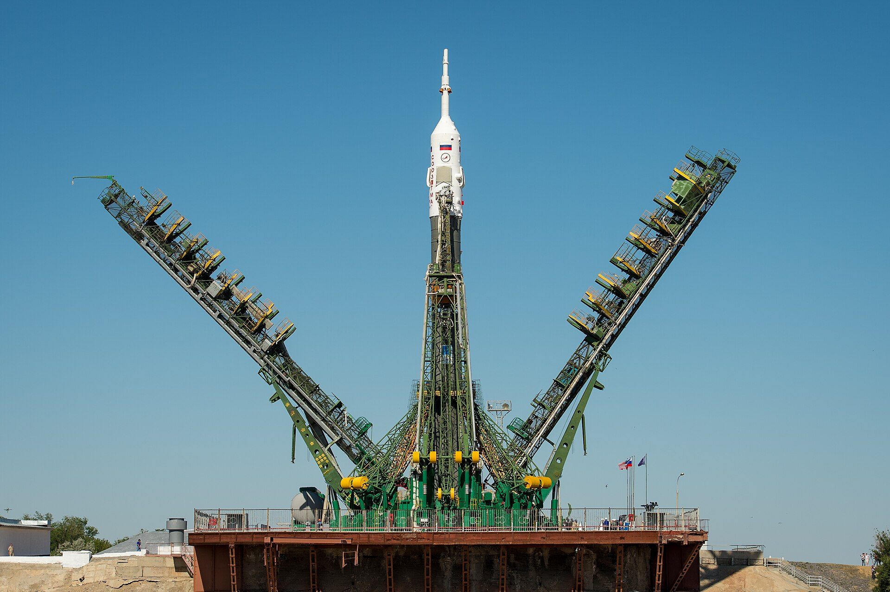

“Space Days Kazakhstan 2026”: A Nine-Satellite International Constellation and Plans Beyond Baikonur
At the forum held Sept. 7–9 in Astana and Baikonur, Kazakhstan presented a plan to assemble a constellation of Earth observation satellites by 2030.

The international forum “Space Days Kazakhstan 2026” was held in Kazakhstan on Sept. 7–9, 2026. The first two days took place at Nazarbayev University in Astana, and the final day in Baikonur.
Representatives of government bodies, space agencies, international organizations, scientists, technology companies and investors took part. Topics of discussion included satellite communications, Earth remote sensing, artificial intelligence and new space technologies.
A nine-satellite international constellation
Under the main plan announced at the forum, Kazakhstan intends to assemble an international constellation of nine Earth observation satellites by 2030. Six of them will be Kazakhstan's contribution, with the remaining three provided by Mongolia, the Republic of the Congo and Nigeria.
It was stated that the constellation could later expand to 14 spacecraft.
National projects
- KazSat-3R — a project to replace the communications satellite system; 10.4 billion tenge was allocated for development in 2026
- KazEOSat-MR — a constellation of three Earth observation satellites; developed by the Kazakh company Ghalam
- Baiterek — a launch complex for the Soyuz-5 rocket (known in Kazakhstan as Sunkar)
The successful launch of the Soyuz-5 rocket took place on April 30, 2026. Kazakhstan currently manages the launch pad and ground infrastructure, while Russia continues to manufacture the rocket.
Baikonur: the lease terms
Russia leases the Baikonur cosmodrome through 2050; the annual rent is $115 million. One of the areas discussed at the forum was gradually reducing Kazakhstan's space activity's dependence on a single cosmodrome.
Space technologies must have practical applications and contribute to economic development.
— Zhaslan Madiyev, Minister of Digital Development of Kazakhstan
A satellite network with China
After the forum, on Sept. 10, negotiations on a China–Central Asia satellite network were announced. The proposed system would consist of five satellites and provide high-resolution imaging, hyperspectral analysis and radar capabilities.
What it means for the region
Earth remote sensing data is used for practical tasks in Central Asia: accounting for irrigation and water resources, monitoring crop areas, tracking the condition of glaciers and preparing for natural disasters. Water allocation remains a sensitive subject in relations among the region's states.
Kazakhstan also aims to develop its capacity to build its own satellites — the Ghalam enterprise is the main industrial base in this area.
Open questions
Baikonur: a brief history
The Baikonur cosmodrome was built in 1955 and is the oldest and largest operating cosmodrome in the world. It was from this site that the first artificial satellite was launched in 1957 and the first human went into space in 1961.
After the collapse of the USSR, the facility remained on Kazakh territory and is managed by Russia under a lease. The lease agreement runs through 2050; the annual payment is $115 million.
In recent years, Kazakhstan has taken back certain sites within the cosmodrome's territory and is using them for new projects. The Baiterek project is part of that process: the launch complex and ground infrastructure there are managed by Kazakhstan.
Why Earth remote sensing is needed
Data from Earth observation satellites is used for a range of practical tasks in the region. These include monitoring the condition of crop areas, identifying water losses in irrigation systems, measuring glacier area, recording the degradation of forests and pastures, and assessing flood and mudflow risks.
Water resources are an interstate issue in Central Asia: the main river flows form in Tajikistan and Kyrgyzstan, while the principal consumers are the downstream countries. Objective measurement data can serve as a common basis in negotiations.
The composition of the international partnership
The proposed nine-satellite constellation provides for the participation of Mongolia, the Republic of the Congo and Nigeria. Such a format reflects a common approach for small and medium-sized countries: building a full constellation alone is expensive, while in a joint arrangement each participant gains access to the entire constellation's data.
The five-satellite network under discussion with China is a separate initiative, providing for high-resolution imaging, hyperspectral analysis and radar capabilities. Radar satellites make it possible to obtain data in cloudy weather and at night.
The industrial base
The Ghalam enterprise in Kazakhstan assembles satellites. It is developing the KazEOSat-MR constellation. Developing a national industrial base generally serves two aims: reducing dependence on external suppliers and retaining engineering personnel.
It was announced that 10.4 billion tenge had been allocated in the 2026 budget for the KazSat-3R communications satellite system. Communications satellites are used for broadcasting, internet and government communication systems.
Space cooperation in the region
Central Asian states participate in the space sector to varying degrees. Kazakhstan holds the leading position with Baikonur and its national satellite programs. Uzbekistan has established its own space agency and uses Earth remote sensing data in agriculture and land cadastre.
The practical form of regional cooperation is data sharing. Images captured by one country's satellite also cover a neighboring country's territory, so combining databases reduces costs.
The international constellation idea discussed at the forum rests on precisely this logic: each participant contributes one or more spacecraft and gains access to the entire constellation's data.
The question of economic returns
Space programs are generally long-term investments with limited direct commercial revenue. For that reason, state programs often advance a criterion of “practical application” — that is, in which sectors the data is used and what savings it delivers.
Kazakhstan's minister of digital development stressed precisely this point at the forum, saying space technologies must have practical applications and contribute to economic development.
The Baiterek project
Baiterek is a joint Kazakh-Russian project to create a new launch complex at Baikonur. Its timelines have been revised over many years and its name has changed several times.
The successful launch of the Soyuz-5 rocket from the complex took place on April 30, 2026. In Kazakhstan the rocket is known as Sunkar. Under the current division of labor, the launch pad and ground infrastructure fall to Kazakhstan, while manufacturing the rocket remains on the Russian side.
The long-term goal discussed at the forum is to increase Kazakhstan's independent share in the launch services market. Competition in that market has intensified considerably over the past decade and prices have fallen.
On Sept. 9, forum participants had the opportunity to watch a launch at Baikonur: that day, a Soyuz-2.1a carrier rocket lifted off from the cosmodrome with the Progress MS-35 cargo vehicle.
The announced plans did not detail the total investment required to assemble the constellation in full or the partners' financial commitments. No separate information was given on the signing of final agreements with the countries in the international constellation.